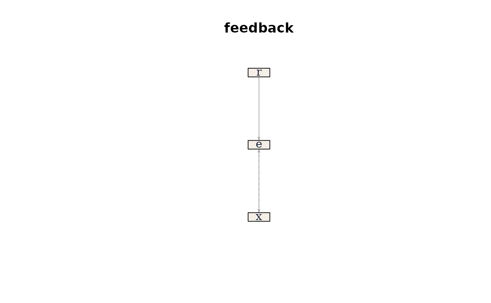

sim_to_dot() writes the model as a Graphviz DOT graph. Edges into
inputs with direct feedthrough are solid; edges into inputs without
direct feedthrough (integrators, delays) are dashed, which makes valid
dynamic feedback visible. plot() draws the same graph with 'igraph'
when it is installed.
sim_to_dot(model)
# S3 method for class 'sim_model'
plot(x, ...)A sim_model().
Passed to igraph::plot.igraph().
sim_to_dot() returns a string; plot() returns x invisibly.
m <- sim_model("feedback")
sim_add_block(m, "constant", "r")
sim_add_block(m, "subtract", "e")
sim_add_block(m, "integrator", "x")
sim_connect(m, "r", "e", input = 1)
sim_connect(m, "x", "e", input = 2)
sim_connect(m, "e", "x")
cat(sim_to_dot(m))
#> digraph "feedback" {
#> rankdir=LR;
#> "r" [shape=box, label="r\n(constant)"];
#> "e" [shape=box, label="e\n(subtract)"];
#> "x" [shape=box, label="x\n(integrator)"];
#> "r" -> "e" [label="1:1"];
#> "x" -> "e" [label="1:2"];
#> "e" -> "x" [label="1:1", style=dashed];
#> }
if (requireNamespace("igraph", quietly = TRUE)) plot(m)
